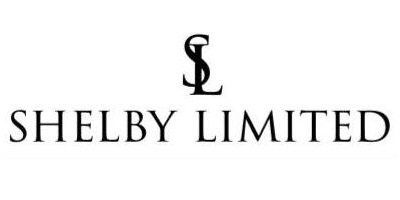

О проекте

Компания Shelby Limited занимается продажей мужских классических костюмов, рубашек, футболок, стильных аксессуаров и обуви, а также предоставляет услуги подгонки костюма по фигуре. Вся продукция производится собственным ателье. Ассортимент товарных предложений достаточно широк, и регулярно пополняется новинками.
В целях экономии бюджета и более быстрого запуска проекта, было принято решение развернуть сайт на готовом шаблоне для CMSБитрикс, от компании «Аспро». Это позволило сократить время на отрисовку и верстку дизайна, и запустить интернет-магазин в кратчайшие сроки. Домен, по желанию заказчика был выбран в соответствии с названием компании: shelbylimited.ru. Открытие интернет-магазина состоялось в середине апреля 2018 года. Наполнением сайта клиент занимался самостоятельно, согласно выданных разработчиком рекомендаций: создавал новые карточки товаров, добавлял тематические фото и описания.
Оптимизация на сайте присутствовала на базовом уровне, реализованном в CMS Битрикс: название страницы подтягивалось в тег title, а мета-тег description дублировался на все страницы сайта в главной, и на этом все. В таком состоянии проект функционировал примерно год, после чего, была предложена услуга по продвижению сайта, от нашего диджитал агентства.
За год, посещаемость сайта выросла до 100 пользователей в месяц, из них примерно 50-70 из поиска и исключительно по витальным запросам связанным с компанией Shelby Limited (кстати, именно так называлась банда из сериала «Острые козырьки», что и было взято за основу, при создании бренда).
Перед стартом оптимизации, у специалистов Nuts Agency имелись опасения, насчет возможных результатов, поскольку в качестве конкурентов выступают такие крупные игроки как HENDERSON, Patrick Man, ASOS, WildBerries, LaModa и Manzetti – компании имеющие более широкий ассортимент товаров, представительства в нескольких регионах и с громким именем